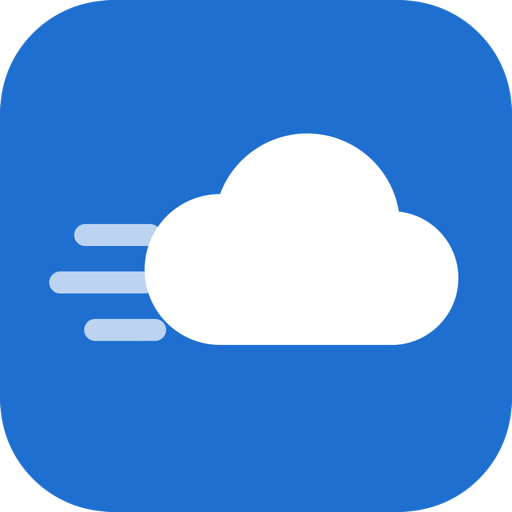

ya2go
Облачный кочевник: перевозит всё с Яндекс.Диска в Google Drive. Без архивов, по одному файлу, с проверкой.
Архивом с Яндекс.Диска большие папки не скачать: если внутри попадётся повреждённый файл, обрывается вся закачка. ya2go берёт файлы по одному, повреждённые откладывает и в конце показывает их списком, а всё остальное переносит.
Как это работает
- Войдите в Яндекс и в Google в окне браузера, которое откроет программа.
- Программа посчитает файлы и проверит, хватит ли места в Google.
- Нажмите «Начать перенос» и оставьте компьютер включённым, хоть на ночь. Программу и крышку ноутбука не закрывайте. Если пропадёт связь, перенос продолжится сам.
- В конце каждый файл сверяется с оригиналом. Файлы, которые Яндекс не отдал, вы увидите списком.
Ваши файлы не проходят через нас. Программа работает на вашем компьютере и передаёт файлы напрямую из Яндекса в Google. Серверов у ya2go нет, мы не видим ни файлов, ни паролей.
Что программа может в ваших аккаунтах
- Яндекс.Диск — только читать файлы. Удалять и менять их программа не может.
- Google Drive — только файлы, которые создала сама программа. Ваши остальные документы ей не видны.
Что нужно знать заранее
- Google принимает до 750 ГБ в сутки. Большой архив переедет за несколько дней, программа продолжит сама.
- Бесплатно в Google Drive 15 ГБ. Для больших архивов нужен Google One.
- Файлы появятся в Google Drive в папке «Из Яндекс.Диска», с прежними папками и датами. В Google Фото сами они не попадут.